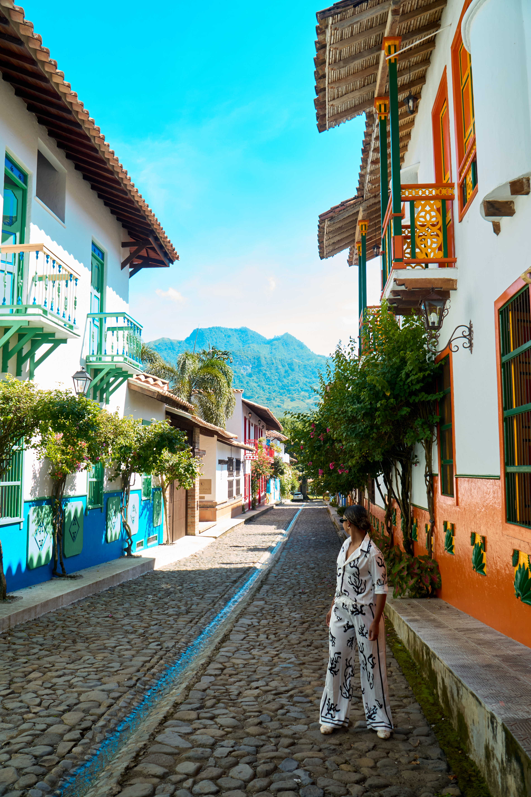
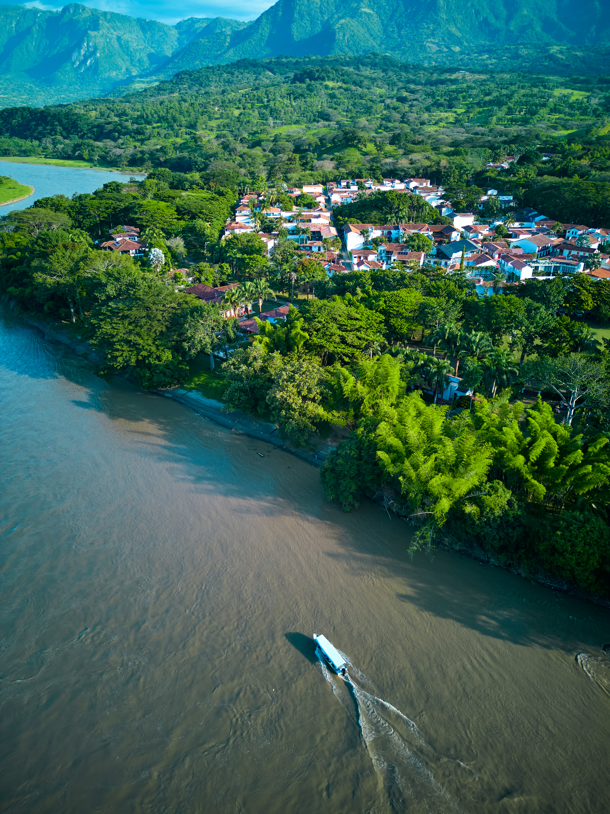

Tour histórico y arquitectónico
Descubre la historia detrás de Cauca Viejo
Embárcate en un recorrido único por el corazón de Cauca Viejo, donde cada rincón cuenta una historia. Explora los icónicos lugares del pueblo, admira la arquitectura colonial que refleja la riqueza de la Colonización Antioqueña y conoce la fascinante vida de Rodrigo Restrepo Puerta, fundador de este mágico lugar.
A pie
Caminata por el pueblo
Duración: 90 min
Cupos Ilimitados
$50,000

Mule
Recorrido en Mule (carrito)
Duración: 60 min
Máx 5 personas
$75,000

Botepaseo
Navegando la historia
Sumérgete en una experiencia única mientras recorres las aguas del imponente Río Cauca. A bordo de un bote tradicional, descubre la historia y la importancia de este río en la región, desde su rol en la Colonización Antioqueña hasta su impacto actual en la vida de las comunidades cercanas.
